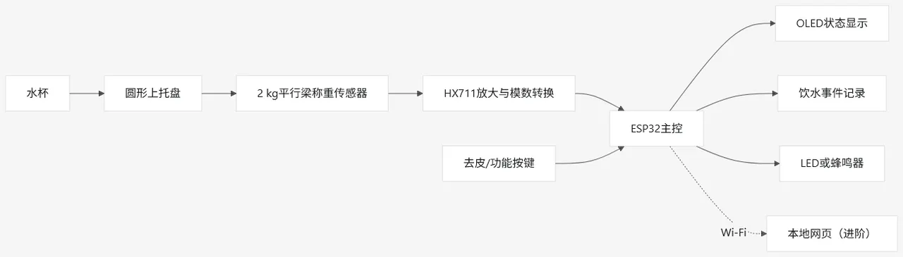
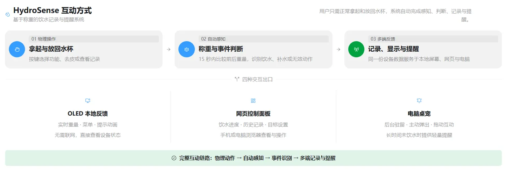

返回硬件项目索引
返回硬件项目索引HydroSense-ESP32：基于压力传感器的桌面饮水行为监测装置
阅读项目文档 ↓本项目完成了基于 ESP32、称重传感器和 HX711 的重量采集系统。实现传感器去皮和砝码校准，使装置能够输出实际重量。对重量数据进行了滤波，减少桌面振动、传感器漂移造成的数值抖动。能够判断水杯的基本状态，包括无杯、杯子放置、杯子拿起和杯子放回。通过比较杯子拿起前和放回后的稳定重量，识别一次可能的饮水行为。使用 OLED 或串口或电脑桌宠软件或手机网页显示当前重量、设备状态和饮水次数，并可与桌宠进行互动，在控制面板查看饮水记录和设定每日饮水目标




项目文档
暑期项目介绍
暑期项目介绍
项目概况
项目名称：HydroSense-ESP32：基于压力传感器的桌面饮水行为检测装置
mentor：巩子杰
项目简介
本项目完成了基于 ESP32、称重传感器和 HX711 的重量采集系统。实现传感器去皮和砝码校准，使装置能够输出实际重量。对重量数据进行了滤波，减少桌面振动、传感器漂移造成的数值抖动。能够判断水杯的基本状态，包括无杯、杯子放置、杯子拿起和杯子放回。通过比较杯子拿起前和放回后的稳定重量，识别一次可能的饮水行为。使用 OLED 或串口显示当前重量、设备状态和饮水次数。
项目成长
第一版：使用3d打印结构+m4、m5紧固件作为基础结构，有外壳与oled安装窗口，但调试异常，数据不随重量变化且原始输出在几个数值间不连续跳动，经查阅资料、询问AI、mentor和传感器商家后推测可能是代码中HX711库的引用不恰当、3d打印结构件强度过低导致重量数据噪声过大。
第二版：保留3d打印结构、m4、m5紧固件作为基础结构，暂不安装外壳与oled，仅通过串口调试，对嵌入式代码进行了修改与优化，加入去皮按键，尝试完成基础称重功能，但大概率是3d打印结构的影响，即使进行了校准后测量误差仍极大，无法完成最低称重目标，尝试换用亚克力材料。
第三版：亚克力还没到货T_T
亚克力已到货，通过m4，m5紧固件安装好后进行无外壳测试，完成了预定任务。
目前的项目简介：
本项目是一个基于 ESP32、HX711 和称重传感器的智能饮水监测装置。它通过杯子重量变化识别饮水和补水行为，并利用 OLED、网页和 Windows 桌宠展示数据、保存记录和发送提醒。
一、基础称重
- 实时读取称重传感器数据并在 OLED 显示重量。
- 支持使用标准砝码进行校准。
- 支持按键、网页和桌宠远程去皮。
- 校准系数保存在 ESP32 中，断电后不会丢失。
二、饮水行为检测
- 用户先放置空杯并按下 SW1，系统自动去皮。
- 杯子被拿起后，在 15 秒内放回才进行事件判断。
- 放回后重量减少超过 5 g，记录一次饮水事件。
- 饮水量取拿起前后重量差，并始终记录为正值。
- 放回后重量增加超过 5 g，记录一次补水事件。
- 重量变化不超过 5 g 时忽略，降低误判。
- 拿起超过 15 秒才放回时不记录该次事件。
- 支持查看最近的饮水和补水记录。
三、提醒功能
- 饮水监测开始后，超过 10 分钟没有饮水会触发提醒。
- OLED 播放饮水提示动画。
- Windows 桌宠自动弹出并发出系统提示。
- 检测到杯子接近空杯后，等待 30 秒仍未补水则提醒补水。
- 空杯提醒会按一定间隔重复，直到检测到补水。
- 提醒可以通过网页或桌宠关闭。
四、每日目标与记录
- 每日饮水目标可设置为 100–10000 g，默认 2000 g。
- 网页和桌宠使用同一个目标值。
- 显示今日饮水量、完成百分比、饮水次数和补水次数。
- 每条记录包含事件编号、类型、饮水量、日期和时间。
- ESP32 在 NVS 中保存最近 100 条记录。
- 到第二天 0 点自动开启新的今日统计。
- 跨日只清零今日数据，历史记录不会删除。
- 旧版无日期记录可以迁移保留，但日期和时间显示为空。
五、OLED 与按键交互
- 上电后进入功能选择页面。
- SW1：进入电子秤，或在设置阶段确认空杯。
- SW2：进入饮水监测或查看饮水记录。
- SW3、SW4：翻阅记录和返回上级页面。
- OLED 可显示重量、监测状态、事件结果、历史记录和提醒动画。
六、网页控制端
ESP32 会创建独立热点：
Plain Text
Wi-Fi：WaterWatching
网页支持：
- 查看实时重量和杯中水量。
- 查看今日饮水进度。
- 设置每日饮水目标。
- 查看带日期和时间的历史记录。
- 执行远程去皮。
- 显示并关闭饮水、空杯提醒。
- 网页打开后可使用访问设备的本地时间辅助校时。
七、Windows 桌宠
桌宠采用 Python + PySide6 + pyserial 实现：
- 自动识别并连接 ESP32 串口。
- 常驻 Windows 系统托盘。
- 可显示、隐藏、拖动和点击互动。
- 双击桌宠打开饮水数据面板。
- 饮水、补水和异常状态触发不同提示。
- 显示今日进度及最近记录。
- 可设置每日目标、去皮和关闭提醒。
- 支持当前用户开机自动启动。
- 每 30 秒向 ESP32 同步一次电脑本地时间。
- 使用 USB 通信，不受校园网认证和客户端隔离影响。
八、数据与通信架构
Plain Text
称重传感器
↓
HX711
↓
ESP32
├── OLED 显示
├── 按键操作
├── NVS 数据保存
├── Wi-Fi 热点 → 手机/电脑网页
└── USB 串口 → Windows 桌宠
嵌入式代码
当前嵌入式程序整体采用“配置参数 + 状态机 + 功能模块 + setup/loop 调度”的结构。
1. 硬件配置模块
- HX711：DOUT=GPIO18，SCK=GPIO5
- OLED：SCL=GPIO22，SDA=GPIO23
- SW1：GPIO35
- SW2：GPIO34
- SW3：GPIO39/VN
- SW4：GPIO36/VP
- OLED 地址：0x3C
- 所有按钮按下时为低电平，由外部电阻上拉
这一部分还定义了检测阈值：
- 有效饮水变化：大于 5 g
- 判断杯子被拿起：重量下降至少 30 g
- 判断杯子放回：重量回升至少 30 g
- 放回时间窗口：15 秒
- 连续稳定样本：3 次
- 无饮水提醒：10 分钟
2. 页面与状态机模块
Page 管理当前页面：
- MENU：功能选择
- SCALE：电子秤
- DRINK_SETUP：放置空杯并去皮
- DRINK_MONITOR：饮水监测
- HISTORY：历史记录
DrinkState 管理杯子状态：
- WAITING：杯子放在底座上，等待拿起
- LIFTED：检测到杯子被拿起，等待放回
ReminderAnimation 管理提醒：
- NONE：无提醒
- DRINK：饮水提醒
- EMPTY_CUP：空杯补水提醒
这样可以避免把所有判断都堆在 loop() 中。
3. 数据结构模块
- Button：保存按钮引脚、消抖状态和变化时间
- DrinkRecord：保存事件类型、饮水量、编号、日期和具体时间
- LegacyDrinkRecord：兼容旧版无日期记录
程序最多保存最近 100 条记录。记录满后采用环形缓冲区覆盖最旧数据，避免无限占用存储空间。
4. OLED 显示模块
- prepareDisplay()：清屏并设置基础字体
- drawHeader()：绘制统一标题和分隔线
- drawMenu()：显示功能菜单和网页地址
- drawRawValue()：未校准时显示 HX711 原始值
- drawWeight()：显示电子秤重量
- drawDrinkSetup()：提示放置空杯
- drawDrinkMonitor()：显示水量、饮水次数和检测状态
- drawHistory()：浏览历史事件
- drawReminderAnimation()：播放饮水或空杯动画
显示刷新间隔为 200 ms，不会在每次 loop() 都重绘屏幕。
5. 按键输入模块
它会：
- 轮询四个按钮
- 使用 40 ms 软件消抖
- 只在稳定的按下边沿产生一次事件
- 将按钮结果组合为位掩码
handleButtons() 根据当前页面解释按键。例如 SW1 在菜单中进入电子秤，在电子秤中则执行去皮。
6. 称重与校准模块
核心函数包括：
- tareScale()：读取当前空载值并去皮
- calibrateScale()：根据已知质量计算比例系数
- readScaleValue()：读取并平均 HX711 数据
- clearCalibration()：删除已有校准值
每次读数取 5 个样本平均；绝对值小于 0.5 g 时归零，减少零点附近跳动。校准系数保存在 ESP32 NVS 中，断电后仍可恢复。
7. 饮水检测模块
主要流程为：
Plain Text
稳定杯重
↓ 重量下降至少30g
杯子被拿起
↓ 15秒内重新放回
等待重量稳定
├─ 重量减少超过5g → 饮水事件
├─ 重量增加超过5g → 补水事件
└─ 变化不超过5g → 忽略
程序保存拿起前的基准重量，并在放回稳定后计算差值。饮水量通过绝对值保存，确保记录始终为正数。
8. 提醒模块
它负责：
- 10 分钟没有有效饮水时触发饮水提醒
- 检测到杯中水量低于 5 g 后进入空杯等待
- 30 秒没有补水时触发空杯提醒
- 空杯提醒每 60 秒可以再次出现
- 饮水或补水后清除对应提醒
startAnimation() 除了启动 OLED 动画，还会向桌宠发送 JSON 提醒事件。
9. 时间与跨日模块
主要函数：
- isLeapYear()：判断闰年
- daysInMonth()：取得当月天数
- nextDateKey()：计算下一天
- currentClock()：根据电脑同步时间和 millis() 推算当前时间
- syncLocalClock()：接收电脑发送的本地日期和时间
- updateDateBoundary()：检测是否跨过 0 点
- ensureDailyDate()：新的一天清零今日统计
ESP32 断电后没有独立 RTC，因此桌宠连接时会立即校时，此后每 30 秒重新同步。
10. 数据持久化模块
NVS 中保存：
- 校准系数
- 最近 100 条事件
- 下一个事件编号
- 历史累计饮水量和次数
- 当前每日目标
- 当前统计日期
- 今日饮水量、饮水次数和补水次数
当检测到旧版 20 条记录结构时，会迁移到新结构，旧记录日期留空。
11. USB 串口通信模块
支持的命令包括：
Plain Text
PING
GET_STATUS
GET_RECORDS
TARE
DISMISS
SYNC_TIME 20260913 36000
SET_GOAL 2000
c 500
x
ESP32 每秒主动发送一次 JSON 状态，饮水、补水和提醒发生时也会立即发送事件。桌宠只解析带有：
Plain Text
{"source":"water_watching"}
的消息，普通串口调试文本会被忽略。
12. Wi-Fi 与网页模块
ESP32 当前创建热点：
Plain Text
SSID: WaterWatching
主要接口：
- GET /api/status：实时状态和今日统计
- GET /api/records：带日期的历史记录
- POST /api/tare：远程去皮
- POST /api/dismiss：关闭提醒
- POST /api/goal：设置每日目标
- POST /api/time：通过浏览器同步时间
当前 WIFI_STA_SSID 为空，因此尚未主动登录校园网络。
13. 主程序调度
setup() 依次完成：
Plain Text
串口 → 按键 → OLED → NVS → HX711 → 去皮 → Wi-Fi网页 → 菜单
loop() 持续执行：
Plain Text
处理网页请求
→ 更新网络地址
→ 检查跨日
→ 读取按钮
→ 处理串口命令
→ 发送周期状态
→ 读取重量
→ 运行饮水检测
→ 检查提醒
→ 刷新OLED
因此整个嵌入式代码的核心可以概括为：以页面状态机管理人机交互，以饮水状态机分析重量变化，以 NVS 保存目标和记录，再通过 OLED、网页和 USB 桌宠输出同一套设备状态。
电路原理图
（简化版）
机械结构
原有3d打印设计：PCB固定座、圆柱外壳（含内部支撑结构、OLED开口......）、中间固定盘、平行梁传感器上下垫块、顶盘
亚克力方案：开放式（无圆柱外壳、PCB固定座），上下支撑盘、亚克力垫块
调试与迭代过程
初版
AI使用说明
1、从想法到计划的过程使用了ai辅助，用于快速确定方案
2、搜集开源资料的过程使用了ai辅助，用于提高搜索效率
3、代码构筑的过程使用了ai辅助，用于弥补我薄弱的C语言基础与快速投入使用
4、我是人机
交流与心得
交流
（碎碎念）
我忏悔，这个项目一开始机械设计部分我就不太知道怎么搞，因为结构有点简单，而且搜了一圈没见到除了电子秤以外的类似产品，。。然后机械结构和PCB、传感器、接线等等应该是高度挂钩的，但是回学校还没拿到东西就把模建了打印了初版，只能用上次页牌的PCB，又赶上短学期，分到了任务爆多的班，原本想着趁着短学期有空把他做好，结果到了9月11还没完成，调试真的闹心，不过看了csdn上很多人写的文档，总算是有一点头绪。中间赶上6-Astra发布，又到处研究了些有的没的。感谢我的mentor，希望我能在开会前做好功能，丑就丑点吧。。
9.13：目前项目功能已经基本完善，但是之前想做的手机、手表应用适配还没有研究明白。目前只有网页和电脑客户端两个方向了